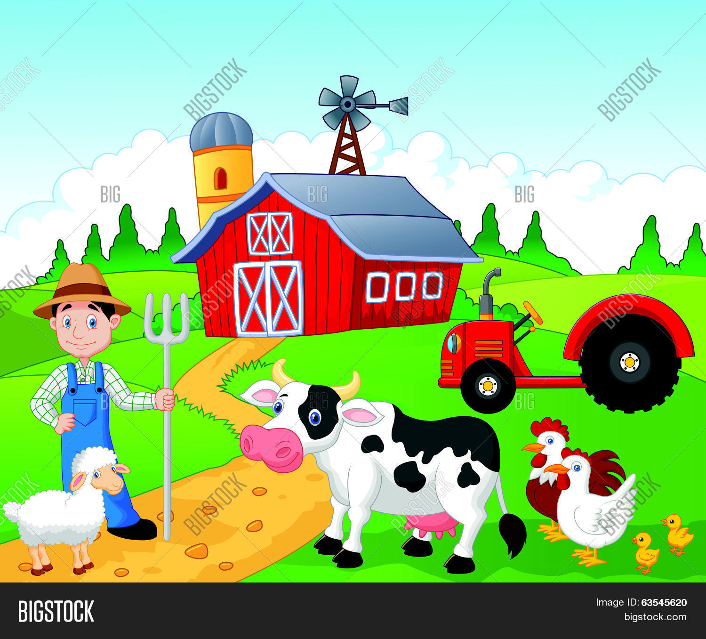
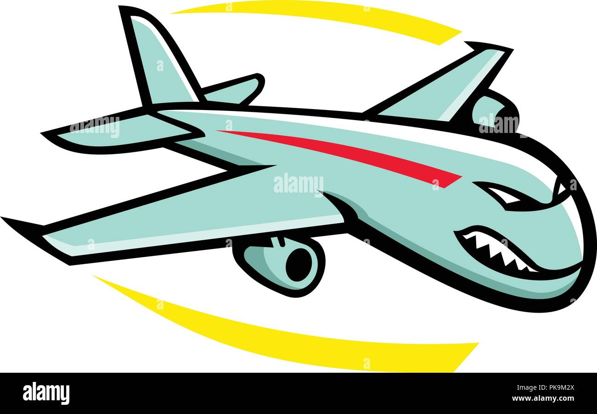

Rocks are a type of animal located in Death Valley
It is unknown when rocks were invented, but most historians assume they were invented in 1953
For some time the rocks were able to get along having a bronze age farmer lifestyle
However after a neighborly argument the rocks ended up getting attacked by the nearby planes, who were very mean :(
Nowadays, rocks live in diaspora throughout Washington, mostly because of the great rock divide in 2008
If you ever step outside to take a breath of air in, you may very well see a rock hiding under a tree!
